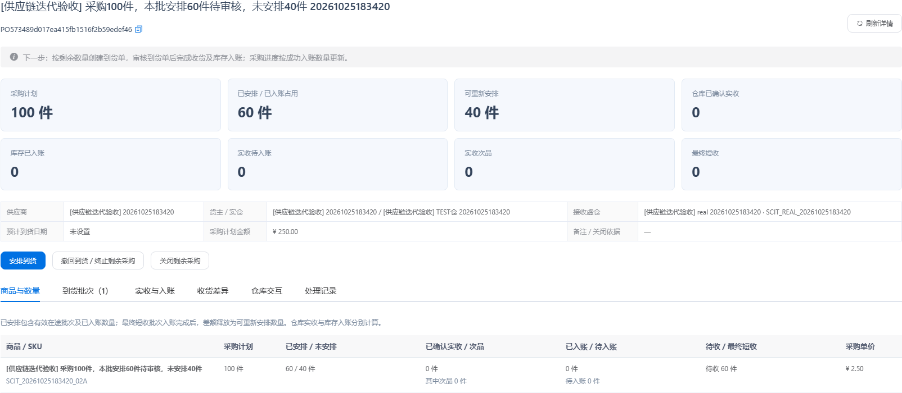
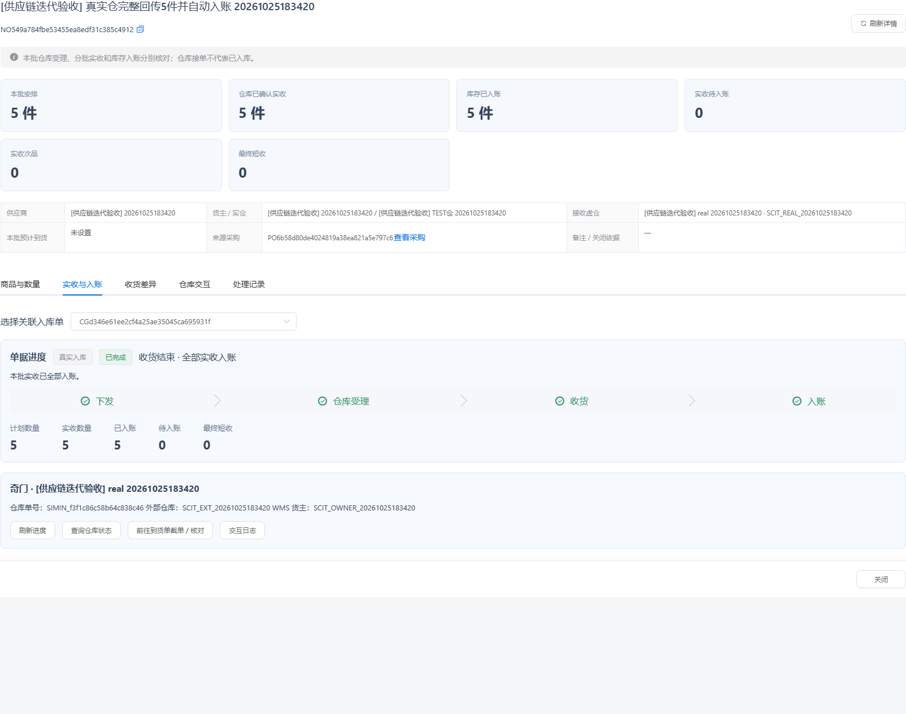
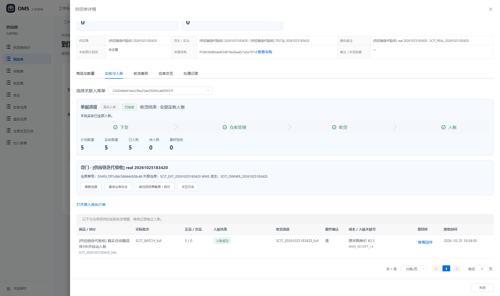
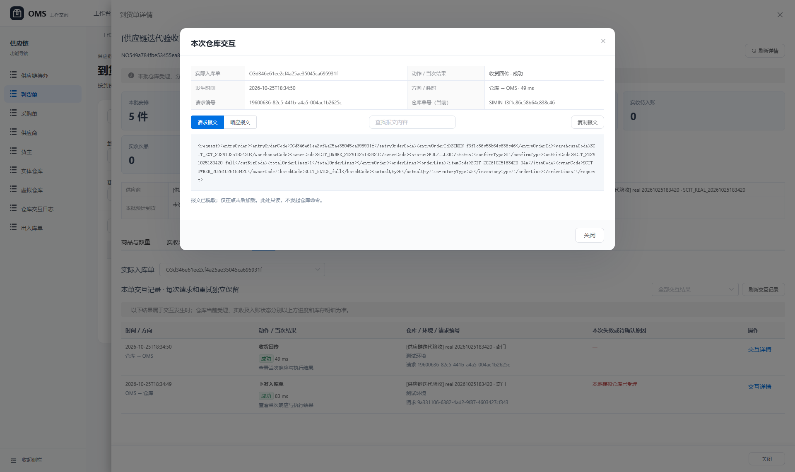
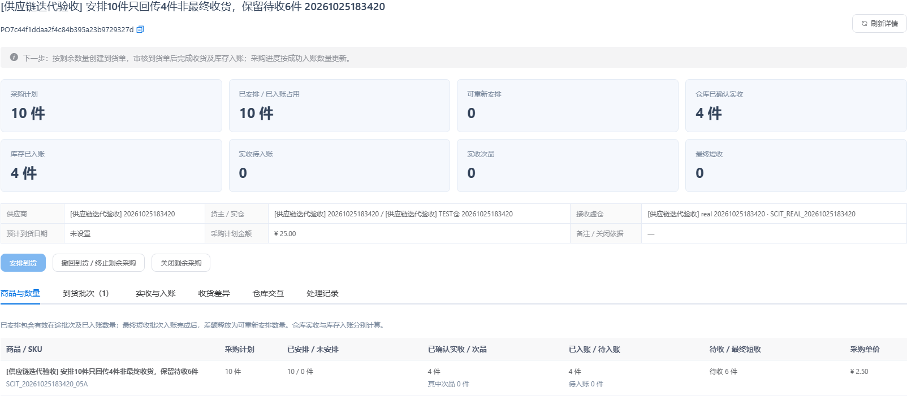
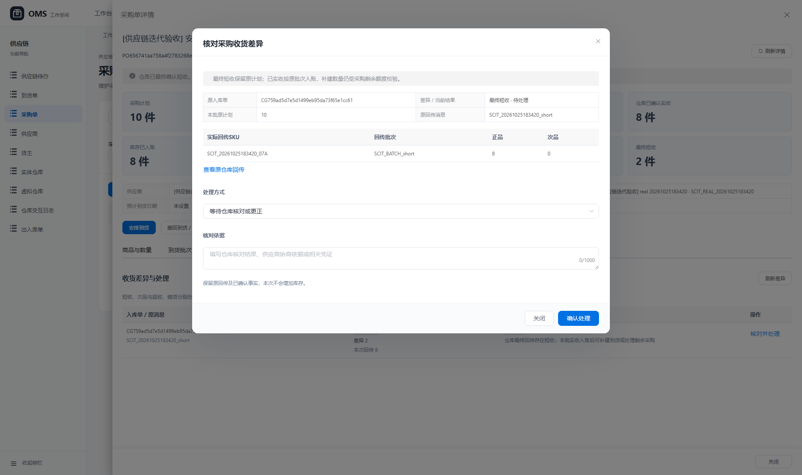
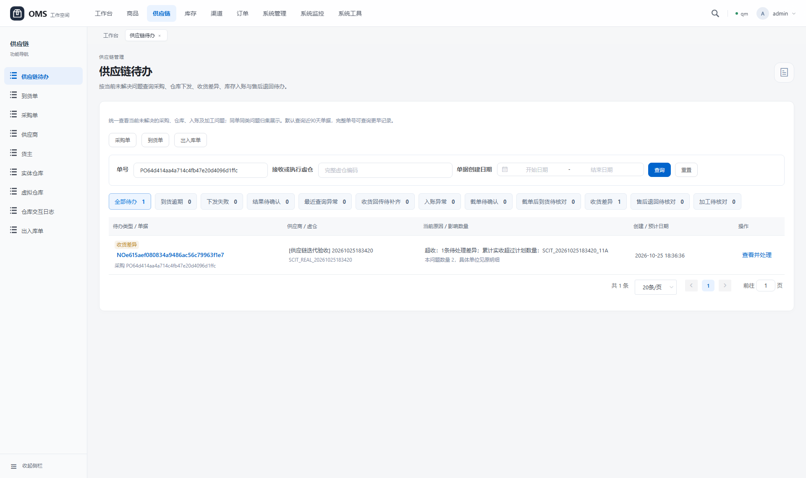
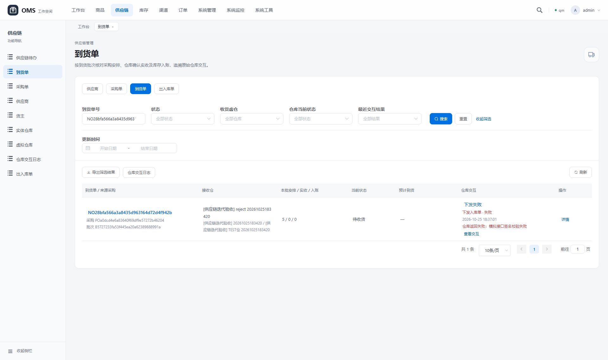

供应链第一轮迭代 · 详细验收报告
2026-10-25T18:37:24.005795 · 本地项目已部署 · 测试资料均保留
后端相关回归247项通过保留业务场景18项通过页面检查14项通过查询检查13项通过 供应链待办 采购单 到货单
本轮交付
- 采购、到货专用详情：采购计划、有效安排、可安排、仓库实收、库存入账、次品及最终短收分别展示；商品按件/套保留单位。
- 独立到货列表与仓库交互字段：当前受理状态、最近交互动作、结果、时间和失败原因独立展示，支持组合筛选及导出。
- 供应链待办：按当前问题归集逾期、下发失败、结果待确认、收货未补齐、入账异常、截单、收货差异、售后退回及加工待核对。
- 差异处理：原回传与处理结论留痕；短收补建受采购剩余额度和版本控制，次品留库不重复入账；超收/错货可等待更正或确认拒收。
自动与人工步骤的边界
本轮采购计划审核、到货审核、截单申请、短收补建决定和次品留库决定由操作员通过正常接口发起。审核提交后的仓库下发、签名回传解析和库存入账由现有自动执行能力完成；验收未人工修改目标状态或库存，也未调用手工收货/入账接口替代自动步骤。
仓库交互来自本地TEST奇门模拟器；真实外部仓库联调不属于本报告结果。查询失败、库存服务失败、跨公司隔离等异常另由隔离数据库回归覆盖，不把它们冒充为保留单据的真实故障。
18个保留场景索引
库存结果总表
每个场景使用独立新SKU，初始库存均为0；仓库与批次的正品/次品分别核对，同时核对OMS商品汇总及每条RECEIVE流水。公司可用为当前OMS汇总台账口径；店铺可售库存发布不在本轮验收范围。
| 场景 | SKU | 公司总量/可用 | 仓库正品/次品 | 仓库可用正/次 | 批次正/次 | 预占/分配/仓锁 | 入库流水条数/合计 |
|---|
| 1 | SCIT_20261025183420_01A | 0 / 0 | 0 / 0 | 0 / 0 | 0 / 0 | 0 / 0 / 0 | 0条 / 0件 |
| 2 | SCIT_20261025183420_02A | 0 / 0 | 0 / 0 | 0 / 0 | 0 / 0 | 0 / 0 / 0 | 0条 / 0件 |
| 3 | SCIT_20261025183420_03A | 10 / 10 | 10 / 0 | 10 / 0 | 10 / 0 | 0 / 0 / 0 | 1条 / 10件 |
| 4 | SCIT_20261025183420_04A | 5 / 5 | 5 / 0 | 5 / 0 | 5 / 0 | 0 / 0 / 0 | 1条 / 5件 |
| 5 | SCIT_20261025183420_05A | 4 / 4 | 4 / 0 | 4 / 0 | 4 / 0 | 0 / 0 / 0 | 1条 / 4件 |
| 6 | SCIT_20261025183420_06A | 5 / 5 | 5 / 0 | 5 / 0 | 5 / 0 | 0 / 0 / 0 | 2条 / 5件 |
| 7 | SCIT_20261025183420_07A | 8 / 8 | 8 / 0 | 8 / 0 | 8 / 0 | 0 / 0 / 0 | 1条 / 8件 |
| 8 | SCIT_20261025183420_08A | 8 / 8 | 8 / 0 | 8 / 0 | 8 / 0 | 0 / 0 / 0 | 1条 / 8件 |
| 9 | SCIT_20261025183420_09A | 5 / 5 | 3 / 2 | 3 / 2 | 3 / 2 | 0 / 0 / 0 | 2条 / 5件 |
| 10 | SCIT_20261025183420_10A | 5 / 5 | 3 / 2 | 3 / 2 | 3 / 2 | 0 / 0 / 0 | 2条 / 5件 |
| 11 | SCIT_20261025183420_11A | 0 / 0 | 0 / 0 | 0 / 0 | 0 / 0 | 0 / 0 / 0 | 0条 / 0件 |
| 12 | SCIT_20261025183420_12A | 0 / 0 | 0 / 0 | 0 / 0 | 0 / 0 | 0 / 0 / 0 | 0条 / 0件 |
| 13 | SCIT_20261025183420_13A | 5 / 5 | 5 / 0 | 5 / 0 | 5 / 0 | 0 / 0 / 0 | 1条 / 5件 |
| 14 | SCIT_20261025183420_14A | 5 / 5 | 5 / 0 | 5 / 0 | 5 / 0 | 0 / 0 / 0 | 1条 / 5件 |
| 15 | SCIT_20261025183420_15A | 0 / 0 | 0 / 0 | 0 / 0 | 0 / 0 | 0 / 0 / 0 | 0条 / 0件 |
| 16 | SCIT_20261025183420_16A | 0 / 0 | 0 / 0 | 0 / 0 | 0 / 0 | 0 / 0 / 0 | 0条 / 0件 |
| 17 | SCIT_20261025183420_17A | 0 / 0 | 0 / 0 | 0 / 0 | 0 / 0 | 0 / 0 / 0 | 0条 / 0件 |
| 18 | SCIT_20261025183420_18A | 0 / 0 | 0 / 0 | 0 / 0 | 0 / 0 | 0 / 0 / 0 | 0条 / 0件 |
01 采购草稿100件，未审核未安排到货 验收通过
详细场景：创建采购草稿，计划100件，暂不审核、不安排到货。
实际结果：计划100、未安排100，实收及入账均为0，未产生执行单。
查看原采购单 POa5c8f7dd33d14d30b866ef7ebb374001
| 计划与执行 | 当前数量 |
|---|
| 采购计划 | 100 件 |
| 有效安排/入账占用 | 0 件 |
| 可安排 | 100 件 |
| 确认实收 | 0 件 |
| 已入账 | 0 件 |
| 实收待入账 | 0 件 |
| 待收 | 0 件 |
| 最终短收 | 0 件 |
| 其中次品 | 0 件 |
| 已截停 | 0 件 |
实际库存：初始0；当前仓库正品 0 件、次品 0 件；可用正品 0、次品 0，仓库锁定 0。公司总库存 0，批次与仓库汇总一致。
07 安排10件最终只收8件，保留短收2件待处理 验收通过
详细场景：安排10件，仓库最终仅确认8件；等待已收8件自动入账。
实际结果：最终短收2件留为待处理差异，已入账8件，采购释放2件可重新安排。
查看原采购单 PO656741aa758a4f2783268e5b3feae733 查看本批到货 NOf3bdf6bd2c7d443682c546d61589b820
| 计划与执行 | 当前数量 |
|---|
| 采购计划 | 10 件 |
| 有效安排/入账占用 | 8 件 |
| 可安排 | 2 件 |
| 确认实收 | 8 件 |
| 已入账 | 8 件 |
| 实收待入账 | 0 件 |
| 待收 | 0 件 |
| 最终短收 | 2 件 |
| 其中次品 | 0 件 |
| 已截停 | 0 件 |
实际库存：初始0；当前仓库正品 8 件、次品 0 件；可用正品 8、次品 0，仓库锁定 0。公司总库存 8，批次与仓库汇总一致。
| 差异类型 | 差异量 | 当次回传量 | 当前处理结果 | 处理人/依据 |
|---|
| 最终短收 | 2 | 8 | 待处理 | 仓库最终回传存在短收；本批实收入账后可补建到货或处理剩余采购 |
| 库存真实入账关联号 | 本次入账 |
|---|
| WMS_RECEIPT_18 | 8件 |
08 最终短收2件后并发点击补建，只创建一张2件到货单 验收通过
详细场景：最终短收2件且原8件入账后，两个并发请求以同一差异版本点击补建到货。
实际结果：只允许一个处理成功，生成一张2件待审核到货单；原8件库存保持，补建单尚未收货或入账。
查看原采购单 PO9cfe017012614067a8dde912f586976f 查看本批到货 NOad5364c02d5243b3a0879500dbec9f23 查看唯一补建2件到货单
| 计划与执行 | 当前数量 |
|---|
| 采购计划 | 10 件 |
| 有效安排/入账占用 | 10 件 |
| 可安排 | 0 件 |
| 确认实收 | 8 件 |
| 已入账 | 8 件 |
| 实收待入账 | 0 件 |
| 待收 | 2 件 |
| 最终短收 | 2 件 |
| 其中次品 | 0 件 |
| 已截停 | 0 件 |
实际库存：初始0；当前仓库正品 8 件、次品 0 件；可用正品 8、次品 0，仓库锁定 0。公司总库存 8，批次与仓库汇总一致。
| 差异类型 | 差异量 | 当次回传量 | 当前处理结果 | 处理人/依据 |
|---|
| 最终短收 | 2 | 8 | 已处理 | admin [验收] 已核对仓库原始回传及本次库存结果 |
| 库存真实入账关联号 | 本次入账 |
|---|
| WMS_RECEIPT_19 | 8件 |
“最终短收2件”保留原批次事实；补建2件为另一个待审核批次，尚未产生新的实收和库存。
09 5件中正品3件次品2件，按质量分别入账 验收通过
详细场景：计划5件，仓库同一最终消息报告正品3件、次品2件。
实际结果：按质量分别入仓和入批次库存，公司总库存5；次品差异2件保留待核对。
查看原采购单 POaa92fb23b2424e24800571837d3a6738 查看本批到货 NOcab70a2daa7449338e42d19b2539ba22
| 计划与执行 | 当前数量 |
|---|
| 采购计划 | 5 件 |
| 有效安排/入账占用 | 5 件 |
| 可安排 | 0 件 |
| 确认实收 | 5 件 |
| 已入账 | 5 件 |
| 实收待入账 | 0 件 |
| 待收 | 0 件 |
| 最终短收 | 0 件 |
| 其中次品 | 2 件 |
| 已截停 | 0 件 |
实际库存：初始0；当前仓库正品 3 件、次品 2 件；可用正品 3、次品 2，仓库锁定 0。公司总库存 5，批次与仓库汇总一致。
| 差异类型 | 差异量 | 当次回传量 | 当前处理结果 | 处理人/依据 |
|---|
| 次品 | 2 | 5 | 待处理 | 仓库次品已按真实质量记录；入账结果及供应商处理需分别核对 |
| 库存真实入账关联号 | 本次入账 |
|---|
| WMS_RECEIPT_20 | 3件 |
| WMS_RECEIPT_21 | 2件 |
10 次品2件入账后确认留库，库存不重复增加 验收通过
详细场景：正品3、次品2自动入账后，操作员核对原回传并确认次品留库。
实际结果：只记录次品处理结论，正品仍3、次品仍2，入库流水总量仍5，未重复加库存。
查看原采购单 PO9513cda720024caeae2ffa444590d680 查看本批到货 NO29de72b205714620a5bd6ccc63e4e676
| 计划与执行 | 当前数量 |
|---|
| 采购计划 | 5 件 |
| 有效安排/入账占用 | 5 件 |
| 可安排 | 0 件 |
| 确认实收 | 5 件 |
| 已入账 | 5 件 |
| 实收待入账 | 0 件 |
| 待收 | 0 件 |
| 最终短收 | 0 件 |
| 其中次品 | 2 件 |
| 已截停 | 0 件 |
实际库存：初始0；当前仓库正品 3 件、次品 2 件；可用正品 3、次品 2，仓库锁定 0。公司总库存 5，批次与仓库汇总一致。
| 差异类型 | 差异量 | 当次回传量 | 当前处理结果 | 处理人/依据 |
|---|
| 次品 | 2 | 5 | 已处理 | admin [验收] 已核对仓库原始回传及本次库存结果 |
| 库存真实入账关联号 | 本次入账 |
|---|
| WMS_RECEIPT_22 | 3件 |
| WMS_RECEIPT_23 | 2件 |
12 计划A商品5件却回传B商品，保留错货但不入账 验收通过
详细场景：计划A商品5件，仓库却签名回传B商品5件；B是另外创建的有效SKU。
实际结果：保留错货差异，未确认A或B实收；两者仓库库存均为0，未生成库存流水。
查看原采购单 PO9b4979c6b3b14967b7ad2c2f87c13a4c 查看本批到货 NObb557e0d416e4508940d71bd2e78d52f
| 计划与执行 | 当前数量 |
|---|
| 采购计划 | 5 件 |
| 有效安排/入账占用 | 5 件 |
| 可安排 | 0 件 |
| 确认实收 | 0 件 |
| 已入账 | 0 件 |
| 实收待入账 | 0 件 |
| 待收 | 5 件 |
| 最终短收 | 0 件 |
| 其中次品 | 0 件 |
| 已截停 | 0 件 |
实际库存：初始0；当前仓库正品 0 件、次品 0 件；可用正品 0、次品 0，仓库锁定 0。公司总库存 0，批次与仓库汇总一致。
| 差异类型 | 差异量 | 当次回传量 | 当前处理结果 | 处理人/依据 |
|---|
| 错货 | 5 | 5 | 待处理 | 回传包含未计划的SKU：SCIT_20261025183420_12B |
另外核对错误商品 SCIT_20261025183420_12B：正品0、次品0。
13 错货回传后仓库按原消息更正为A商品5件 验收通过
详细场景：先以原消息回传错误B商品，后由仓库使用同一原消息身份更正为A商品5件。
实际结果：错误报文保留为已更正；只接受更正后的A商品，自动入账A5件，B库存仍为0。
查看原采购单 PO5562140614854d6da1dd8539ce857a66 查看本批到货 NO03904fe54eec4816b6dcb80b7652f393
| 计划与执行 | 当前数量 |
|---|
| 采购计划 | 5 件 |
| 有效安排/入账占用 | 5 件 |
| 可安排 | 0 件 |
| 确认实收 | 5 件 |
| 已入账 | 5 件 |
| 实收待入账 | 0 件 |
| 待收 | 0 件 |
| 最终短收 | 0 件 |
| 其中次品 | 0 件 |
| 已截停 | 0 件 |
实际库存：初始0；当前仓库正品 5 件、次品 0 件；可用正品 5、次品 0，仓库锁定 0。公司总库存 5，批次与仓库汇总一致。
| 差异类型 | 差异量 | 当次回传量 | 当前处理结果 | 处理人/依据 |
|---|
| 错货 | 5 | 5 | 后续回传已更正 | 系统 仓库后续更正回传已按原消息接收 |
| 库存真实入账关联号 | 本次入账 |
|---|
| WMS_RECEIPT_24 | 5件 |
另外核对错误商品 SCIT_20261025183420_13B：正品0、次品0。
18 采购预计日期已过且尚未安排到货，显示逾期待办 验收通过
详细场景：审核10件采购，预计到货日期设为昨日，不安排到货。
实际结果：统一待办显示该采购逾期，实收、入账、库存均为0，未自动虚构到货。
查看原采购单 PO4a8b04f78977483b911e08ace805a1fb
| 计划与执行 | 当前数量 |
|---|
| 采购计划 | 10 件 |
| 有效安排/入账占用 | 0 件 |
| 可安排 | 10 件 |
| 确认实收 | 0 件 |
| 已入账 | 0 件 |
| 实收待入账 | 0 件 |
| 待收 | 0 件 |
| 最终短收 | 0 件 |
| 其中次品 | 0 件 |
| 已截停 | 0 件 |
实际库存：初始0；当前仓库正品 0 件、次品 0 件；可用正品 0、次品 0，仓库锁定 0。公司总库存 0，批次与仓库汇总一致。
性能处理及实际查询结果
- 采购最多200个SKU一次批量远程校验，避免逐行RPC；先校验后加业务锁。
- 当前页的执行单、实际商品、已入账数量及最后交互批量读取；按公司和完整单号定位。详情不预加载完整日志与原报文。
- 待办默认近90天、显式日期范围限制、分页最多50条；采购明细、当前差异及预计到货有公司范围索引。
- 差异记录保留原消息哈希唯一键；补建锁采购→到货→入库单并校验版本。库存沿用原实收明细关联号确保重复回传不重复记账。
| 本机暖请求（5次） | 中位数 | 最大值 |
|---|
| 待办默认近90天 | 30.2 ms | 46.3 ms |
| 待办完整采购单号 | 31.6 ms | 35.2 ms |
| 采购详情 | 22.0 ms | 41.2 ms |
| 采购列表仓库状态筛选 | 47.1 ms | 49.8 ms |
耗时来自本机当前数据，不是生产容量压测或性能承诺。执行计划及原始样本保存在query-check.json。
查询与页面逐项验收
- 组合筛选 purchase / full / ACCEPTED / SUCCESS = 1 通过
- 组合筛选 receipt / dispatch_fail / FAILED / FAILED = 1 通过
- 组合筛选 receipt / full / FAILED / SUCCESS = 0 通过
- 组合筛选 ticket / full / ACCEPTED / SUCCESS = 1 通过
- 当前待办 short / DIFFERENCE = 1 通过
- 当前待办 rearrange / DIFFERENCE = 0 通过
- 当前待办 bad_keep / DIFFERENCE = 0 通过
- 当前待办 corrected / DIFFERENCE = 0 通过
- 当前待办 dispatch_fail / DISPATCH = 1 通过
- 当前待办 late / REVIEW = 1 通过
- 当前待办 overdue / OVERDUE = 1 通过
- 完整实际CG单号可直接定位对应到货的差异 通过
- 拒绝超量分页、无效待办类型及超过93天的显式日期范围 通过
- 采购详情区分计划100、有效安排60、未安排40；默认不加载日志或原报文 通过
- 采购可进入独立到货详情，待审核批次保留60件待收，尚未下发仓库 通过
- 独立到货入口显示本批安排5、仓库实收5、库存入账5 通过
- 实收页展示实际SKU、原采购成本、批次、入账结果及库存流水关联号 通过
- 入账记录可定位原回传，原始请求响应仍按需加载 通过
- 仓库交互详情可加载脱敏原报文并保留当次动作与结果 通过
- 部分实收4件保留6件待收，不提前判定最终短收 通过
- 最终短收显示2件，可核对本批原计划、原消息、原SKU及可选处理方式 通过
- 统一待办查询能定位超收差异，影响数量及原因可见 通过
- 待办直达对应到货差异，不把仓库超收回传展示为已入库 通过
- 到货列表显示真实下发失败和最近失败原因，不冒充仓库已受理 通过
- 到货导出保留正确到货字段、仓库状态和最近交互结果 通过
- 出入库商品视图的仓库交互定位原CG执行单，不把商品行ID当成仓单ID 通过
- 浏览器验收未更改单据或库存，页面无JavaScript异常 通过
保护基线
验收前后旧订单、原退款/换货单、原保留SKU的公司及仓库库存、自动队列策略和换货扫描任务设置一致。测试没有重跑旧业务、改变全局自动策略或清理测试资料。新增数据库表、字段及索引均有中文备注。
页面截图
采购计划与到货数量分开查看原图
真实到货、实收与入账查看原图
采购成本与真实库存流水查看原图
原仓库交互报文查看原图
部分实收与待收查看原图
最终短收处理查看原图
统一待办定位超收查看原图
列表独立展示仓库失败查看原图